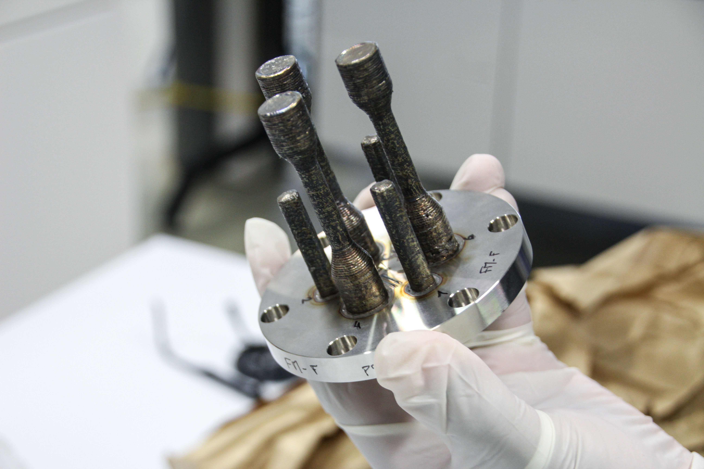

We machine and print the parts the mission cannot do without.
Through our subsidiary Sigma Engineering & Fabrication, we deliver mil-spec precision machining and additive manufacturing for flight and ground hardware. CNC to 0.0005 inch tolerance, large-format resin additive at 46 microns, technical ceramic, and multi-material FDM, engineered to work the first time, and every time.
From raw stock to mission hardware.
We turn metal, polymer, and ceramic into the precision parts that fly, hold tolerance, and survive the environment. Sigma Engineering & Fabrication brings subtractive and additive manufacturing under one roof, so a single source carries a part from concept to qualified hardware.
We machine to mil-spec, print to micron resolution, and select the material to the requirement. When a part has to mate to a flight instrument, seat a sensor, or hold form under load, it leaves our floor measured and ready to integrate.
Mil-Spec CNC Machining
We machine precision components to 0.0005 inch tolerance on multi-axis CNC. From single qualification articles to production runs, we hold the geometry, finish, and repeatability that flight and ground hardware demand.
Large-Format Resin Additive
We print at 46-micron resolution across a large build volume, producing fine-feature parts, fixtures, and complex geometries that conventional machining cannot reach. High detail, repeatable, and ready for downstream finishing.
Technical Ceramic
We work technical ceramic for applications that demand thermal stability, electrical isolation, and wear resistance. We match material to environment, so the part performs where metals and polymers reach their limit.
Multi-Material FDM
We build with multi-material FDM to combine structure, flexibility, and function in a single part. Tooling, jigs, housings, and prototypes move from drawing to hardware fast, without sacrificing fit.
Material Selection & Engineering
We engineer the material to the mission, metal, polymer, or ceramic, weighing strength, mass, thermal behavior, and environment. The right material chosen up front is the part that holds in service.
Prototype to Production
We carry hardware from first article to qualified production under one source. Rapid iteration on the prototype, disciplined repeatability in production, with the same hands and the same standard throughout.

SSAI / Sigma Engineering & FabricationBuilt for the programs that cannot fail.
Our parts go into instruments, vehicles, and devices where fit, finish, and material behavior are not negotiable. We deliver across aerospace, defense, civil space, medical, and research, the customers who need a part right the first time.
Precision is the deliverable
We machine to 0.0005 inch and print to 46 microns because the mission has no margin for a part that is close. Every article is measured against the drawing before it leaves the floor, so what we hand off is what was specified, the first time, and every time.
Subtractive and additive together
By carrying CNC machining, additive, ceramic, and material engineering under one source, we shorten the path from design to qualified hardware and keep accountability in one place from start to finish.
The rest of the Engineering practice.
Precision machining and additive sit inside SSAI's Engineering practice, where instrument engineering, electronics manufacturing, and mission operations work as one. Explore the capabilities that build and run the systems the mission depends on.
Instrument & Systems Engineering
We engineer the instruments and systems that have to work the first time.
Explore →Electronics Manufacturing
We build flight-grade circuit cards and hardware end to end.
Explore →Space & Mission Operations
We keep the mission running, from pre-launch through on-orbit.
Explore →Bring us the part the mission cannot fail.
From mil-spec CNC to large-format additive, technical ceramic, and multi-material FDM, Sigma Engineering & Fabrication delivers precision hardware engineered to work the first time. Tell us what you need to build.